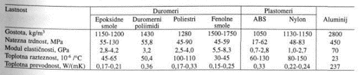
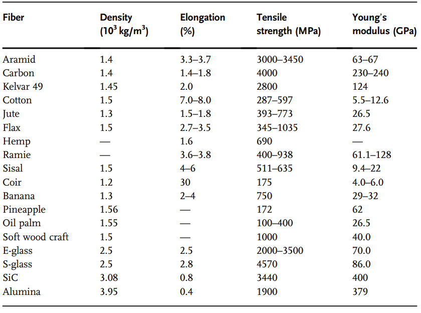
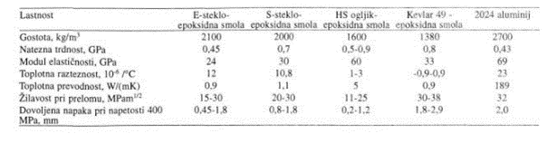

Ker so kompoziti kombinacija dveh ali več različnih materialov so lastnosti nastalega kompozita odvisne od lastnosti snovi, ki ta kompozit sestavljajo. Zato je sprva pregled lastnosti polimernih matric, nato armatur in na koncu pregled lastnosti nekaterih pogostih kombinacij teh snovi.
Za polimerne matrice se pretežno uporabljajo duromeri(epoksidne smole, fenolne smole, poliamidi, poliestri itd.), ki zagotavljajo dobro odpornost proti zunanjimi kemijskimi vplivi, imajo dokaj visoke temperaturne uporabe in dobro dimenzijsko stabilnost. Imajo pa tudi slabe lastnosti- so krhki in tehnološki proces izdelave teh kompozitov pa je zahteven. Bolj enostavna je pridelava plastomerov, vendar te niso tako dimenzijsko stabilni, so pa bolj odporni na vlago in žilavi. Določene lastnosti polimernih matric so vidne v spodnji tabeli. 
Epoksidne smole imajo dobro adhezijo na vlakna in se zamrežujejo z majhnimi skrčki v primerjavi z drugimi duromeri, kar pomeni da jih lahko uporabljamo v kombinaciji z vsemi vlakni. So termično dokaj stabilne(uporaba do 170 °C v suhem in do 125°C v mokrem), imajo dobre električne lastnosti in so cenovno ugodne. Nekatere pomanjkljivosti pa so: absorbirajo vlago, s čimer se spreminjajo lastnosti izdelkov, ter so krhke. Žilavost epoksidnih smol lahko povečamo z dodajanjem kavčukov ali PEEK(polieter eter keton)
Fenolne smole so zelo krhke(uporabljajo se večinoma z epoksidnimi smolami), so pa termično bolj stabilne(uporaba v suhem do 225°C)
Bismalemidi(BMI) so termično še bolj stabilne(uporaba do 260°C), vendar so s tem tudi bolj krhke
Poliimidi(PI) so najbolj termično stabilne (uporaba do 350°C), vendar so prav tako krhke.
Kevlar, steklena in ogljikova vlakna so zelo pogosto uporabljena za izdelavo kompozitov, vendar so odporna na biodegradacijo in predstavljajo težave za okolje. Naravna vlakna(bambusova, jutova, ananasova itd.) imajo visoko odpornost in so lahko uporabljeni za nosilne aplikacije. Prednosti naravnih vlaken je, da so obilno razpoložljivi iz obnovljivih virov in so biorazgradljivi. Določene lastnosti naravnih in sintetičnih vlaken lahko vidimo v tabeli spodaj.
V primerjavi s klasičnimi inženirskimi materiali je glavna prednost polimernih kompozitov njihova nižja gostota v kombinaciji z visokimi moduli, odpornostmi in žilavosti, (vidno na Sliki 4.6: Lastnosti kvazi-izotropnih kompozitov v primerjavi z aluminijem.[6]) kar omogoča zmanjšanje mase izdelkov brez ogrožanja stabilnosti in odpornosti izdelka, česar se pogosto poslužujejo v letalski in vesoljski industriji. Potrebno pa je biti pozoren na dejstvo, da so osnovni tipi kompozitov anizotropni
